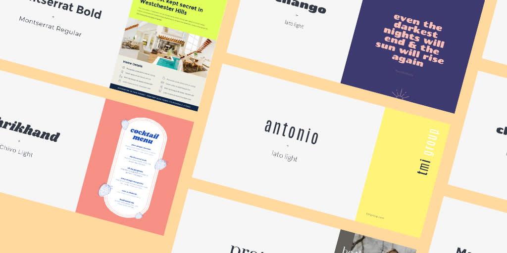

Yapay Zeka
Google, Yeni Yapay Zeka Modelini Duyurdu
Google'ın Gemini 2.5 Flash'ı nihayet erişime açıldı: Üstelik hiç olmadığı kadar hızlı!
Haberi Oku(Güneş ve Ay simgelerine tıklayarak sayfanın gündüz gece ayarlarını yapabilirsiniz.)

Yayınlanma Tarihi: 2 Mayıs 2025
Yayınlayan Kişi: Bora Şenel 232211057
Nasıl birden fazla font aynı anda kullanılır sorusunun cevabı burada!
CSS font pairing, web tasarımında birden fazla yazı tipini bir arada kullanarak estetik ve okunabilirliği artırmayı amaçlayan bir tekniktir. Bu teknik, genellikle başlıklar ve gövde metni için farklı yazı tipleri seçerek görsel çekiciliği artırır.
Öncelikle dikkat etmemiz gereken şey şu, kontrast farkına sahip çıkılmak zorunda.
Dikkat etmemiz gereken ikinci kısım ise, bir yazı fontunu üstün kılmak. Sayfada hiyerarşiyi sağlamak adına bir yazı fontunu daha çok kullanarak görsel düzeni sağlayabiliriz.
body { background-color: black; font-family: Verdana, sans-serif; font-size: 16px; color: gray; } h1 { font-family: Georgia, serif; font-size: 60px; color: white;}
Örneğin bu kodu kendi sayfanızın stylesheet'ine ekleyerek fontunuzu seçebilirsiniz. Bu kodun kullanımında "Georgia" font düzeninin buradaki üstün font olduğu açıkca ortada.
CSS font pairing, web tasarımında estetik ve okunabilirliği artırmak için etkili bir yöntemdir. Doğru yazı tiplerini bir araya getirerek, kullanıcı deneyimini iyileştirebilir ve içeriğinizi daha çekici hale getirebilirsiniz.
Aşağıdaki yazılar pairing kullanılarak yapılmıştır.
Google'ın Gemini 2.5 Flash'ı nihayet erişime açıldı: Üstelik hiç olmadığı kadar hızlı!
Haberi Oku
Yepyeni özelliklere sahip Nintendo Switch 2 resmî olarak tanıtıldı: İşte özellikleri ve fiyatı!
Haberi Oku
Yapay zekanın iş dünyasındaki etkileri her geçen gün artıyor. Uzmanlar, önümüzdeki 10 yıl içinde birçok mesleğin dönüşeceğini öngörüyor.
Haberi Oku